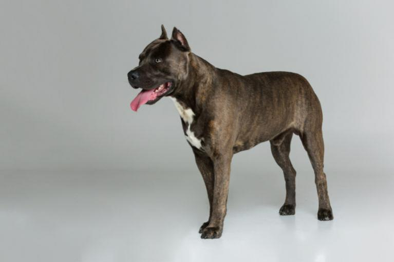

Amerikai staffordshire terrier (Amstaff)
Az amerikai staffordshire terrier, amit amerikai stafford terrier-nek vagy röviden amstaff-ként is emlegetnek, jobban polarizálódik, mint talán bármely más fajta is: míg Európa egyes országaiban „veszélyes harci kutyának“ számít, melynek tartása tiltott vagy bizonyos követelményekhez kötött, Nagy-Britanniában nagyra becsülik „nanny dog“ azaz gyerekdada kutyaként. Ez pompásan igazolja, hogy a kutyák agresszivitásának és keménységének oka gyakran a póráz másik oldalán található. Ez a fajta igenis rászolgál az elfogulatlan, előítéletmentes megítélésre, hiszen a sok előítélet mögött egy okos, dinamikus és mindig lojális társ rejtőzik.
Az amerikai staffordshire terrier megjelenése: kompakt testfelépítésű kutya

Izmos, kompakt testén ülő, bikaszerű fejével az amstaff impozáns jelenség. Vállmagassága 43-48 cm közötti, súlya pedig akár 23 kg is lehet. Sötét szemei széles fejen ülnek, fülei általában félig felfelé állóak – a lelógó, lekókadó fül nemkívánatos. A staff füleinek korábban oly divatos megcsonkítása manapság már szerencsére sok európai országban tiltott.
Szőrzete és annak színei
A fajta rövid, csillogó szőrzete csaknem valamennyi színárnyalatban megcsodálható. Nemkívánatos viszont a hiányzó orr-pigmentáció, a dobermannok esetében jól ismert fekete-drapp színváltozat, valamint a fehér szín magas részaránya sem, amely gyakran genetikailag meghatározott süketséggel jár együtt.